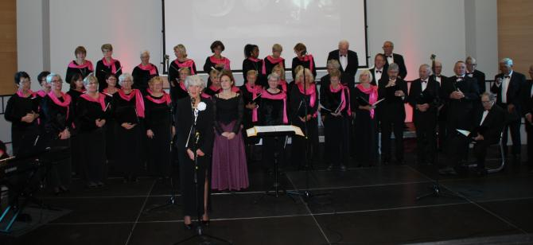
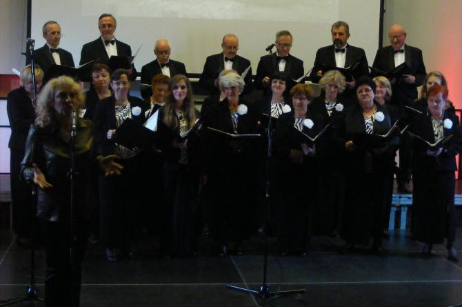
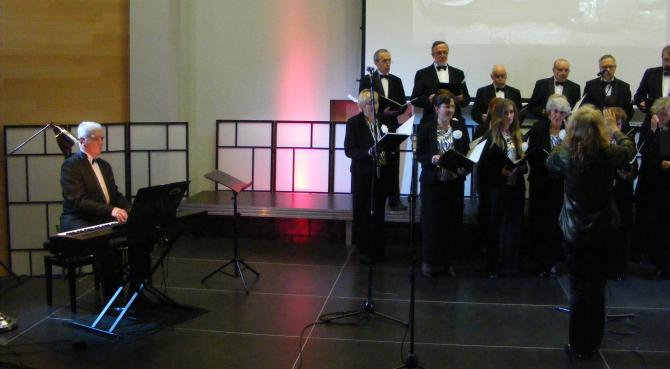
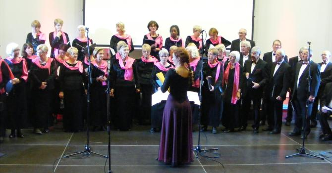
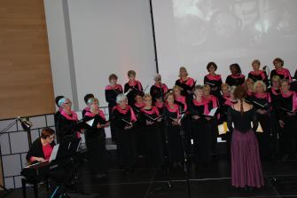
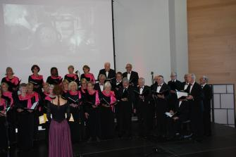
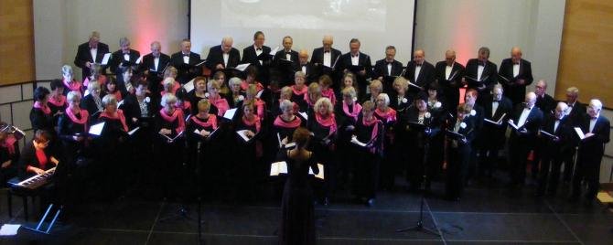
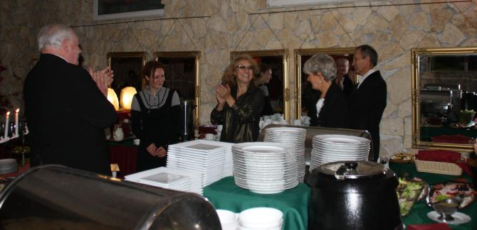
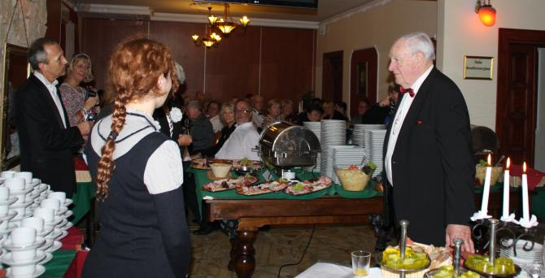

A tymczasem w Cameracie...
.
2015-10-17
Francuski chór działa od 1980 r. pod patronatem „Multiphonie”, która zajmuje się organizacją życia chóralnego w tym regionie. „La Pastourelle” w ramach wymian międzynarodowych koncertował do tej pory w Portugalii, Anglii, Niemczech, Belgii, Rumunii i Hiszpanii. Repertuar zespołu jest bogaty i urozmaicony.
Wspólny koncert chórów w Kampusie Wielickim rozpoczęła Camerata. Chórem dyrygowała Izabela Szota,

zaś wykonywanym utworom akompaniował Andrzej Kłyszewski.

Następnie wystąpił "La Pastourelle" ze swoim repertuarem. Każdy z utworów poprzedzało wprowadzenie w j. francuskim i j.polskim.

Chórem dyrygowała Anne-Julie Lagneau oraz Jean-Claude Bourdon,
a akompaniowała Suzie Robitaille.
 
Na koniec obydwa chóry wykonały razem Chorał J.S. Bacha i Everybody sing Freedom.

Po koncercie członkowie chórów spotkali się na wspólnej kolacji.
 

© Stowarzyszenie Muzyczne Chór Camerata Wieliczka
Projekt i wykonanie:  Prowadzenie strony: Małgorzata Wysocka-Cebula
Prowadzenie strony: Małgorzata Wysocka-Cebula